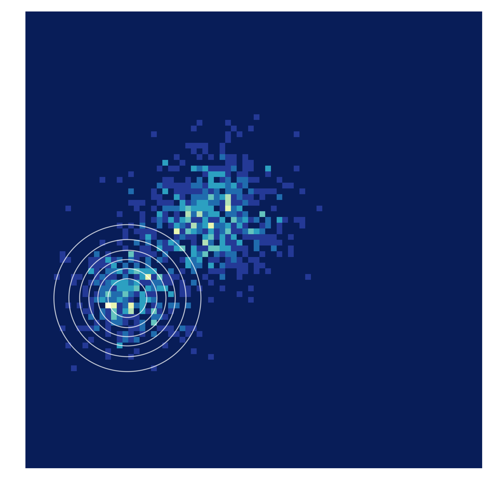

Motivation
Generative modeling is the task of learning a model from data that we
can sample new points from. This often translates into learning a
probability distribution that is close to some real data distribution
from which we have access to samples. In recent years deep neural
networks have been leveraged to amortize inference across observed data
in latent variable models, sample new points via flexible implicit
models and more.
In recent years a plethora of generative models have been introduced, often
accompanied by a catchy name and impressive claims. The object of this review
is to show the landscape of generative models in a taxonomy showing their
connections and differences. A specific generative modeling approach can then be
seen as the consequence of a series of different modeling choices rather than an
ad hoc invention. From this vantage point we can tailor our generative modeling
approach to the problem at hand as a practitioner and wisely choose where we
wish to explore next as a researcher.
Before diving into the various choices that can be made during the generative
modeling process, let us give a definition for the task at hand.
Introduction
Generative modeling is the task of learning a model from data that we can
sample new points from. This often translates into learning a probability
distribution that is close to some real data distribution from which we have
access to samples. Additionally we often wish to learn interesting structure
from data, or impose structure we know exists into the generative model.
In recent years deep neural networks have been leveraged to amortize
inference across observed data in latent variable models,
sample new points via flexible implicit models and more, we will refer to
this as Deep generative modeling.
Phrased Formally:
View the data as a sample from an underlying probability distribution
$\mathcal{Q}$ defined over a Polish space $\mathcal{X}$
(Complete and separable whose topology comes from a distance function).
Denote by $\mathcal{P}_{\mathcal{X}}$ the space of probability measures
$\mu$ defined on $(\mathcal{X}, \mathcal{U})$,
$\mathcal{U}$: Borel $\sigma$-algebra generated by open sets of $\mathcal{X}$.
Consider a way to compare elements of $\mathcal{P}_{\mathcal{X}}: (P,Q)
\rightarrow D(P,Q) \in [0, \infty)$,
The goal, given a family of distributions $\mathcal{P}_\theta \in P_X$,
is to find $\min_{\theta}L(\theta)=D(Q, P_{\theta})$
.
From this definition we can start to dilineate some of the high
level choices that end up defining a generative modeling procedure.
-
Decision one:
Choice of $D$
-
Decision two:
Principle of learning: how to $\min_{\theta}L(\theta)=D(Q, P_{\theta})$
- Decision three:
How to model $\mathcal{P}_\theta$
Many popular generative models in use today can be indexed by their answers
to the above questions. There are obviously many finer points of distinction
but that is beyond the scope of this survey. We will tackle each in turn,
paying special attention to the choice of divergence. We will then discuss
popular models and how they fit in in the above taxonomy.
Finally we will discuss desiderata for the choice of divergence $D$,
examine how the choice of $D$ impacts the final
the final learned model and how that relates to downstream tasks.
Finally we will attempt to see how which choices of $D$ are
compatible with which sets of desiderata for a downstream task.
Choice of $D$
One of the most important modeling decisions is the choice of divergence
or distance between $P_R$ and $P_G$.
To qualify as a true distance a measure $\textit{d}$ must fulfill:
- $d(x, x)=0$
This is a common sense property for any distance to have.
- $x \neq y \implies d(x,y)>0$
This is called seperation and is also a common sense requirement
that follows from (1).
- $d(x,y) = d(y,x)$
This symetry may be nice to have.
- $d(x, y) \leq d(x, z) + d(z, y)$
This is the triangle inequality.
When a choice $d$ fails to fulfill (3) or (4), we will call it a divergence.
To encompass both divergences and distances we will refer to $D$ from our
original definition of generative modeling.
Now lets take a look at the different families from which to draw $D$,
enumerate their members, and discuss their characteristics.
F-divergences
Description
Let $P$ and $Q$ be two probability distributions over a space
$\Omega$ such that $P$ is absolutely continuous with respect to $Q$.
Then, for a convex function $f$ such that $f(1)=0$ the
f-divergence of $P$ from $Q$ is defined as:
$$D_f(P || Q) = \int_{\Omega} f(\frac{dP}{dQ})dQ$$.
Members
| Name |
$\mathbf{\mathcal{f}(t)}$ |
| KL-divergence |
$t \log t$ |
| Reverse KL-divergence |
$-\log t$ |
| Alpha divergence |
$
\begin{cases}
\alpha \neq \pm 1 & \frac{4}{1-\alpha^2}(1-t^{\frac{(1+ \alpha)}{2}}) \\
\alpha = 1 & t \ln t \\
\alpha = -1 & -\ln t
\end{cases}
$
|
| Squared hellinger |
$(\sqrt{t} -1)^2$ |
| Jensen shannon |
$-(t+1)\log \frac{1+u}{2} +u \log u$ |
| Pearson $\mathcal{X}^2$ |
$(u-1)^2$ |
| Total variation |
$\frac{1}{2} |t-1|$ |
Analysis
TODO
Integral Probability Metrics
Description
Given a real valued, bounded and measureable set of functions
$\mathcal{F}$ on $M$:
$$
\gamma_{\mathcal{F}}(P, Q) =
\sup_{f \in \mathcal{F}}|\int_{M} f dP - \int_M f dQ|
$$
Members
Given a metric space $(M, \rho)$ with $\mathcal{A}$ beging a borel
sigma algebra induced by metric topology. let $mathcal{P}$ be the set
of all Borel probability measures on $\mathcal{A}$
| Name |
Choice of $\mathcal{F}$ |
| Dudley metric |
$\mathcal{F} = \{f : ||f||_{BL} \leq 1\}$
Where:
$||f||_{BL} := ||f||_{\infty} + ||f||_L$
$||f||_{\infty}:= \sup\{|f(x)| : x \in M\}$
$||f||_L:=\sup\{|f(x) -f(y)|\rho(x,y) :x \neq y \in M\}$
|
| Maximum mean discrepancy |
$\mathcal{F} = \{f: ||f||_{\mathcal{H}} \leq 1 \}$
$H$ is a reproducing kernel hilbert space with $k$ as its reproducing kernel.
|
| Kantorovich metric |
$\mathcal{F}=\{f: ||f||_L \leq 1 \}$ |
| Total variation distance |
$\mathcal{F} =\{f: ||f||_\infty \leq 1\}$ |
| Kolmogorov distance |
$\mathcal{F}=\{\mathcal{1}_{(\infty, t]}, t \in \mathbb{R}^d\}$ |
Analysis
TODO
Bregman divergences
Description
For two continuous distributions $\mathbb{P}$, $\mathbb{Q}$ and a strictly
convex function $\phi(x):\mathbb{R} \to \mathbb{R}$
$$D_{\phi}(\mathbb{P}, \mathbb{Q}) = \int[
\phi(p(x))-\phi(q(x)) - \phi'(q(x))(p(x) - q(x))]d\mu(x)
]$$
where $p(x)$ and $q(x)$ are the probability density functions of
$\mathbb{P}$ and $\mathbb{Q}$ respectively and $\mu$ is the base measure.
Members
| Name |
Choice of $\mathbb{\phi}$ |
| $L^2$ loss |
$\phi(x)= ||x||_{2}^2$ |
| Itakura-Saito divergence |
$\phi(x) = -log(x)$ |
| KL divergence |
$\phi(x) = \sum_{i=1}^d x_i log x_i$ |
| Mahalonobis distance |
$\phi(x) = x^T A x$ where A is positive definite |
Analysis
TODO
Decision 2: choice of model/representation
There are many different ways to model $P_{\theta}$, in this review
we will focus on a few general trends.
Latent variable models
Implicit models
Decision 3: Principle of learning
An important criteria that can defines a generative modeling procedure is
the principle of learning. There are many different specific mechanisms for learning in generative models including:
- Exact methods
- Nmerical integration
- Generalized method of moments
- Maximum A posteriori
- Laplace approximation
- Expectation maximization
- Monte carlo
- Variational methods
Since we are considering the broader goal of minimizing $D(P_{\theta}, P_{R})$
in the context of deep generative models lets consider two approaches for doing
this:
- Maximum likelihood estimation
- Estimation by comparison.
Maximum likelihood
One popular approach to finding an optimal $P_{\theta}$ is to set theta
so that the data we observe is maximally probable:
$\max_{\theta \in \mathbb{R}\sum_{i}^{m} log P_{\theta}(x_i)}$
This is equivalent to minimizing $KL(P_{r}, P_{\theta})$ asymptotically.
Learning by comparison
For the following discussion lets refer to the real distribution
as $p^*$ and our approximating distribution as $q$.
Often we don't have access to the likelihood function $P(D|\theta|)$ but
can easily sample from our model $q_{\phi}$
and have access to samples from the data generating distribution $p^{*}$.
Also lets say our model maps a latent vector $z$ to a sample.
In this case our only hope is to proceed with learning by comparing
samples from $q_{\phi}$ and $p^*$ and adjust $\theta$ to make this
comparison more favorable. Consider the ratio
$r_{\phi} = \frac{q}{p^*}$. When $r_{\phi}$ is 1, the distributions are
identical. We can try and develop a learning procedure that attempts to
improve $r_{\phi}$ by alternating between Comparison and
Estimation steps.
In the Comparison step we build an auxilliary model to evaluate
differences between observed data and simulated data.
In the estimation step we adjust model
parameters. The general framework for this type of learning is as follows:
First combine the real data and simulated data to form
$\{\boldsymbol{x_1}..\boldsymbol{x_N}\}$.
Next assign them binary labels (+1, -1) respectively, denoting their
class membership.
Observe that $p^*(\boldsymbol{x})=p(\boldsymbol{x}|y=1)$ and
$q(\boldsymbol{x}) = p(\boldsymbol{x}|y=-1)$. W can now write the ratio
as $\frac{p^*(\boldsymbol{x})}{q(\boldsymbol{x})} =
\frac{p(\boldsymbol{x}|y=1)}{p(\boldsymbol{x}|y=-1)}$
Through a bayes
substitution this equals
$\frac{p(y=+1|\boldsymbol{x})p(x)}{p(y=+1)} / \frac{p(y=-1|\boldsymbol{x})p(x)}{p(y=-1)}$
This allows us to equate $r_{\phi}$ with the class probability ratio
$\frac{p(y=1|x)}{p(y=-1|x)}$.
Next assume a scoring function $D_{\theta}(\boldsymbol{x}) = p(y=+1|\boldsymbol{x})$.
Since we have binary labels it makes sense to use a bernoulli loss:
$\mathcal{F}(\boldsymbol{x}, \theta, \phi) = E_{p^*(x)}[\log D_{\theta}(\boldsymbol{x})]
+ E_{q_{\phi}}(x)[\log (1-D_{\theta}(\boldsymbol{x}))]]$
Our optimization can now be
$min_{\phi}max_{\theta}\mathcal{F}(\boldsymbol{x}, \theta, \phi)$
This gives the two alternating steps with respect to each set of parameters:
-
Update $\theta$: $\nabla_{\theta} E_{p^*}(x)[\log D_{\theta}(\boldsymbol{x})]
+ \nabla_{\theta} E_{q_{\phi}}(x)[log(1-D_{\theta}(\boldsymbol{x}))]$
-
Update $\phi$: $-\nabla_{\phi}E_{q(z)}
[log D_{\theta}(f_{\phi}(\boldsymbol{z}))]$
Popular models
A closer look at $D$
Intuition
The choice of $D$ has a big impact on the final learned model. To gain some
intuition, we show here images of an isotropic guassian trying to fit data
from a random mixture of gaussians under various choices of $D$. Though
things are very different in high dimensions, we can start seeing the kinds
of trade offs being made by visualizing this simple setting.

Wasserstein distance
 Forward KL
Forward KL
 Pearson Chi-squared
Pearson Chi-squared
 Reverse KL
Reverse KL
 Squared Hellinger
Squared Hellinger
 Total Variation
Total Variation
 Energy based gans
Energy based gans
Downstream tasks and desiderata